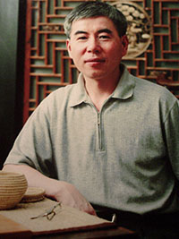

赵丕成（1952—）
上海市人。上海工艺美术职业学院教授、上海市工艺美术大师、海派玉雕特级大师、上海海派玉雕文化协会专家委员会专家、上海市非物质文化遗产项目代表性传承人。 1976年毕业于上海市工艺美术学校玉雕专业，1987年毕业于浙江美术学院。自1976年至今于上海市工艺美术学校、上海工艺美术职业学院从事工艺美术和玉雕工艺教育工作。 其作品意境高妙、自然天成、砣工优雅、气韵贯通，呈现出人文、画意和技艺的多种美感。在全国玉雕奖项中多次获得大奖。编写有《切磋琢磨——玉器》、《玉器工艺》书籍，以及多篇论文，注重“手艺浸润文化，琢玉表现艺术，传承融入现代”。 唐蓓麟(1956—)
上海市人。海派玉雕大师、上海工艺美术职业学院副教授 1976年 毕业于上海市工艺美术学校玉雕专业 1977年～1996年 上海玉石雕刻厂任雕刻师、设计师 1997年～1998年 无锡灵山大佛博物馆装饰设计师 1999年 昆明世界园艺博览会上海馆、科技馆展示设计师 2000年～2005年 上海海星银器制造有限公司设计师 2006年～2008年 上海乐玉坊玉雕工作室设计师 2009年～2010年 上海张铁军珠宝集团公司大师工作室设计师 2011年 上海英合玉器有限公司设计师 2011年9月至今 上海工艺美术职业学院玉雕专业任教 华国津（1961—）
高级工艺美术师、云南玉雕大师、云南省工艺美术大师、中华玉雕艺术大师、国家职业玉器鉴定评估师、云南珠宝玉石文化促进会常务副会长、云南工艺美术行业协会副会长、云南职称领导小组 副组长、德宏珠宝商会毛料委员会，评审委员会，雕刻委员会，评委，云南省工艺美术行业十大领军人物。 1976年8月上海玉雕专科学校 1979年上海玉雕厂炉瓶车间 1986年河南西峡玉矿任教 1994年中国消费报，珠宝鉴赏鉴定师 2007年代表上海工艺美院赴云南德宏芒市职业教育中心支教 2015年任教于上海工艺美术职业学院玉雕专业  付跃慧（1959—） 付跃慧（1959—）上海市人。高级工艺美术师、艺术家。1986年毕业于上海师范大学美术系，学士。1995年毕业于名古屋艺术大学美术学院，研究生。 专业：油画、雕刻、仿古玉雕、综合材料等。 1976.2.—2008.6 上海玉雕厂 1986.7-1992.7 上海行知艺术师范学校 美术教师 2000.7-至今 上海工艺美术职业学院 专业教师、美术教师  崔磊（1972—） 崔磊（1972—）姓 别：男 民族 : 汉 出生年月：1972年10月31日 籍 贯 : 天津 职 称：中国工艺美术大师 获得称号 中国工艺美术大师 中国玉石雕刻大师 中国玉石雕刻青年艺术家 高级工艺美术师 上海市非物质文化遗产项目代表性传承人 上海特级玉石雕刻大师 天津市工艺美术大师 王彩芸(1980-)
上海市人. 中级工艺美术师 1999年毕业于上海市工艺美术学校工艺雕塑专业，2005年毕业于同济大学。2016年毕业于上海师范大学艺术设计专业. 1999年-2001年于上海琉璃工房、琉圆(大观水晶)两家台企,担任设计部原型雕塑师. 2001年-2003年于上海华艺玉雕厂,担任玉器设计与制作主管. 2003年-2007年于上海三多实业有限公司,担任琉璃,金属及多材质工艺品开发设计主管 2007年-2009年于深圳松源工艺品有限公司上海分公司,担任玉石产品研发部主管. 2009年-2011年于上海今益坊文化传播公司,担任世博会项目和田玉产品的研发,生产部门负责人. 2011年-2013年于上海冠运实业,参与和田玉,翡翠,产品研发与材料采购工作. 2013-至今,上海工艺美术职业学院-工艺美术研究中心从事学生管理工作,参与工艺美术类比赛辅导和玉雕工艺辅助教学工作。 专业的教育培训与行业经验不断积累。参与若干大型企业设计合作项目，且积极参与市场营销企划，使设计师和市场零距离的接触，从而突破了传统的设计模式。 对于宝玉石原材料，市场需求，开发设计方向，成本的核算，卖点的整合，有多年的实际经验。由于工作中接触到各种材质与工艺，对于多种材质的跨界组合，设计与工艺标准都有经验与体会。 张宇飞(1989-)
2015年毕业于云南艺术学院 视觉传达硕士研究生. 2013/6~ 2014/9在朝阳翠语珠宝文化有限公司设计部担任设计总监 2015/1~ 2015/4受聘昆明理工大学 2015/7~ 至今受聘上海工艺美术职业学院 孙精神(1989-)
高级工艺美术设计师。 2013年毕业于上海工艺美术职业学院玉雕方向 2013月9月-2014年7月上海工艺美术职业学院3+1大师班1年学习玉雕制作 2014年09月～至今在上海工艺美术职业学院任教教辅工作
 王帅军(1991-) 王帅军(1991-)2013年07月毕业于上海工艺美术职业学院工艺美术品设计与制作专业-玉雕方向 2013月9月-2014年7月上海工艺美术职业学院3+1大师班1年学习玉雕制作 2014年09月～至今在上海工艺美术职业学院任教教辅工作
|